#2772 Zwei rechnen ab
Alternativ: Gunfight at the O.K. Corral
Auszeichnungen: für 2 Oscars nominiert
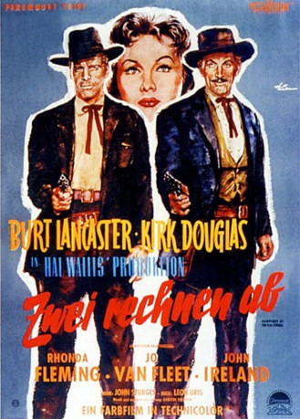 
 IMDB-Wertung: 7.2 / 10
IMDB-Wertung: 7.2 / 10  Metascore: 0
Metascore: 0 
Eine Bande erbarmungsloser Banditen – zwei echte Helden – der ewige Kampf Gut gegen Böse. Mischt man diese Komponenten, erhält man ein episches Abenteuer im Wilden Westen – Zwei rechnen ab! In diesem actionreichen Western-Klassiker kämpfen Burt Lancaster und Kirk Douglas Seite an Seite, um Tombstone in Arizona aus der Hand der mordenden Clanton Gang zu befreien. Gesetzeshüter Wyatt Earp und Revolverheld John “Doc” Holliday stehen in der Stadt ihrem bislang größten Widersacher gegenüber, Ike Clanton und seiner gnadenlosen Bande. Es dauert nicht lange, bis aus der Konfrontation ein Kampf auf Leben und Tod entbrennt. Zusammen mit Rhonda Fleming, Jo Van Fleet, John Ireland, Dennis Hopper, DeForrest Kelley, Martin Milner und Lee Van Cleef wird hier ein legendäres Kapitel in der Geschichte des Wilden Westens geschrieben.
Jahr: 1957
Dauer: 122 Minuten
FSK: 16
Land: USA Studio: Paramount PicturesTonspuren:
Untertitel:
Auflösung: 1080p (1920x1080) Größe: 10752 MB
Genre: Drama, Western
Regisseur: John Sturges
Drehbuch: Leon Uris, George Scullin
Soundtrack: Dimitri Tiomkin
Darsteller:
 Burt Lancaster als Wyatt Earp
Burt Lancaster als Wyatt Earp Kirk Douglas als Doc Holliday
Kirk Douglas als Doc Holliday- Rhonda Fleming als Laura Denbow
- Jo Van Fleet als Kate Fisher
- 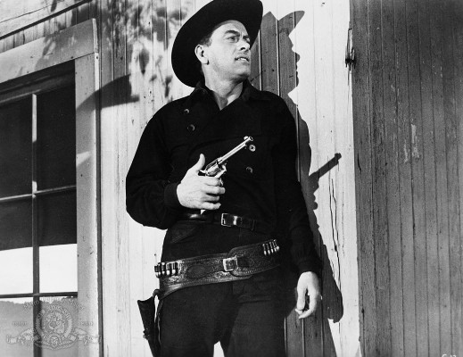 John Ireland als Johnny Ringo
- Lyle Bettger als Ike Clanton
- 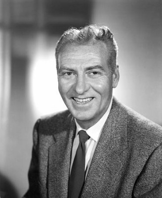 Frank Faylen als Cotton Wilson
- Earl Holliman als Charles Bassett
- 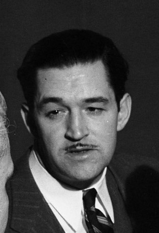 Ted de Corsia als Shanghai Pierce
- 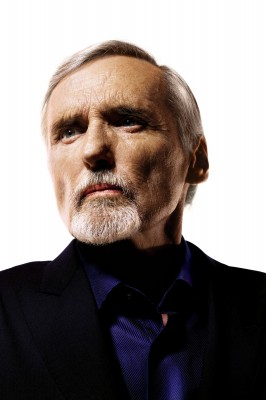 Dennis Hopper als Billy Clanton
- 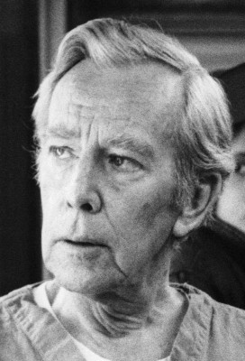 Whit Bissell als John P. Clum
- 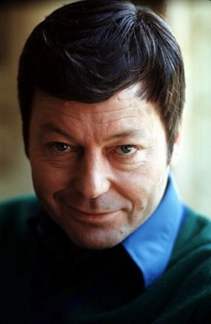 DeForest Kelley als Morgan Earp
- 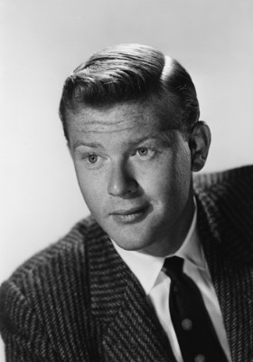 Martin Milner als James Earp
 Kenneth Tobey als Bat Masterson
Kenneth Tobey als Bat Masterson Lee Van Cleef als Ed Bailey
Lee Van Cleef als Ed Bailey- 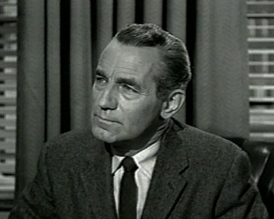 Nelson Leigh als Mayor Kelly
 Jack Elam als Tom McLowery
Jack Elam als Tom McLowery- Don Castle als Drunken Cowboy
 Franklyn Farnum als Barfly , uncredited
Franklyn Farnum als Barfly , uncredited- 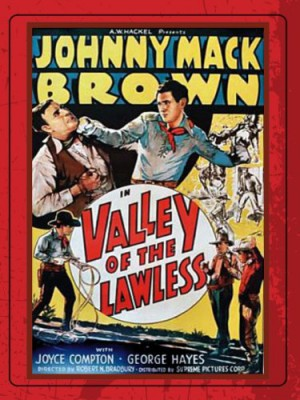 Frank Hagney als Bartender , uncredited
- Dennis Moore als Cowboy , uncredited
 Bing Russell als Harry - Griffin Bartender , uncredited
Bing Russell als Harry - Griffin Bartender , uncredited- 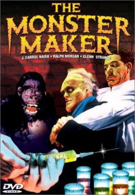 Glenn Strange als Pierce Henchman in Saloon , uncredited
- George Mathews als John Shanssey
- John Hudson als Virgil Earp
- Joan Camden als Betty Earp
- Olive Carey als Mrs. Clanton
- Brian G. Hutton als Rick
- Tom Arnold als Barrel-Rolling Boy , uncredited
- William Bailey als (uncredited
- John Benson als Rig Driver , uncredited
- Danny Borzage als Accordionist , uncredited
- Rudy Bowman als Party Guest , uncredited
- Nora Bush als Party Guest , uncredited
- Frank Carter als Hotel Clerk , uncredited
- Roger Creed als Deputy / Killer / Townsman , uncredited
- James Davies als Card Player , uncredited
- Joseph Forte als Tombstone Card Player , uncredited
- Raoul Freeman als Party Guest , uncredited
- Paul Gary als Killer , uncredited
- Robert Haines als Barfly , uncredited
- Stuart Hall als Party Guest , uncredited
- Len Hendry als Cowboy , uncredited
- Charles Herbert als Tommy Earp - Virgil's Son , uncredited
- Edward Ingram als Deputy , uncredited
- Anthony Jochim als Old Man , uncredited
 Dave Kashner als Cowboy , uncredited
Dave Kashner als Cowboy , uncredited Kenner G. Kemp als Croupier , uncredited
Kenner G. Kemp als Croupier , uncredited Colin Kenny als Barfly , uncredited
Colin Kenny als Barfly , uncredited Jack Kenny als Barfly , uncredited
Jack Kenny als Barfly , uncredited
Datei: X:\HD-Western-1900-1959\Zwei rechnen ab (1957, FSK16, 1920x1080).mkv seit 14.12.2015
Festplatte: HD Eastern+Western
 Es gibt insgesamt 98 Filme in der Gruppe 'HD-Western-1900-1959'
Es gibt insgesamt 98 Filme in der Gruppe 'HD-Western-1900-1959'